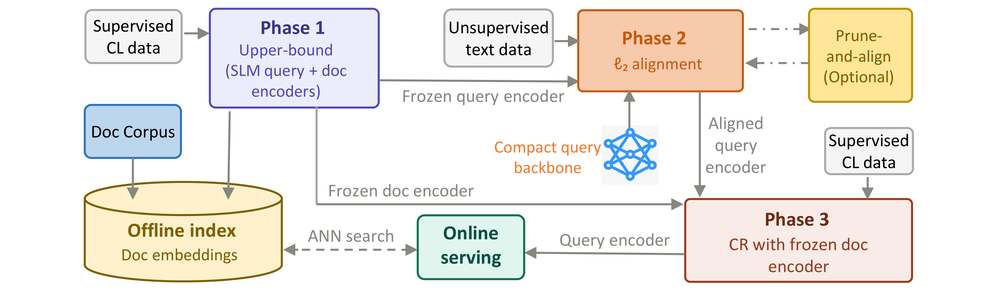
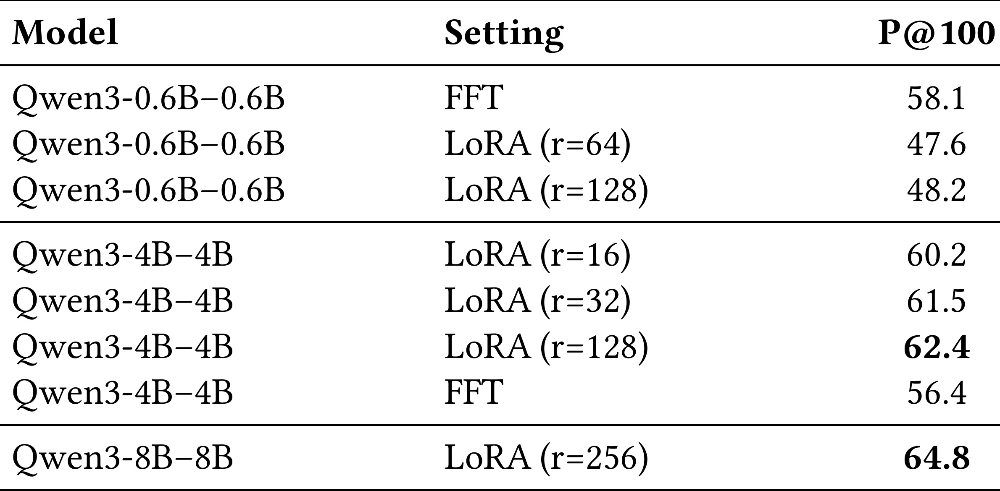
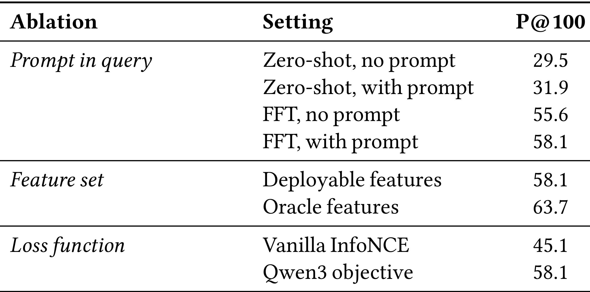
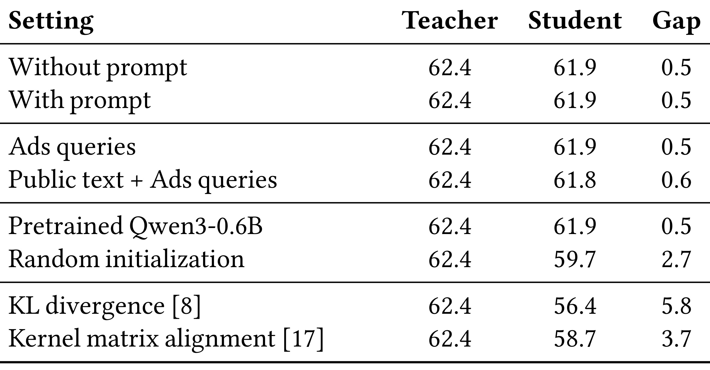
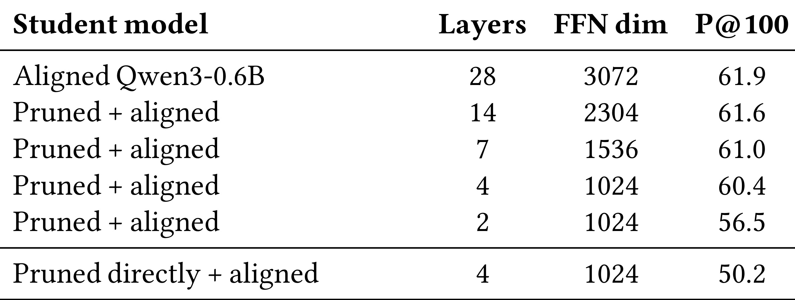
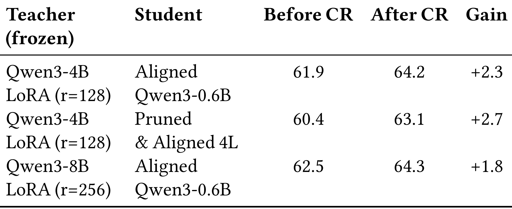
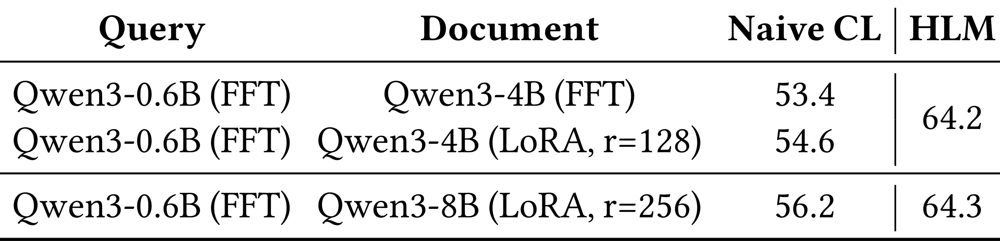
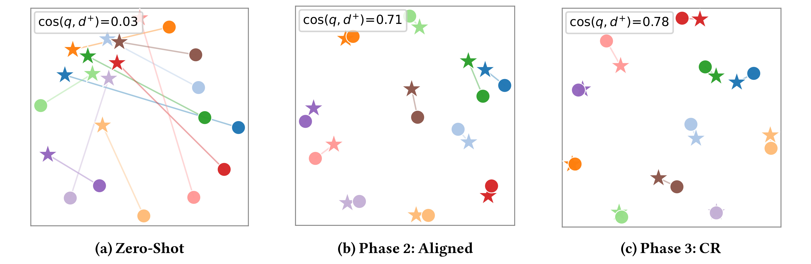
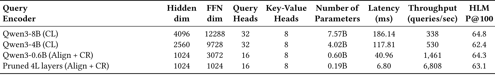
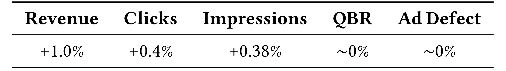

HARNESS-LM: A Three-Phase Training Recipe for Harnessing SLMs in Sponsored Search Retrieval：面向 Sponsored Search Retrieval 的三阶段 SLM 蒸馏配方
论文入口：arXiv:2605.23572。作者：Vipul Gupta, Shikhar Mohan, Lakshya Kumar, Pranjal Chitale, Nikit Begwani, Amit Singh, Manik Varma。机构口径：Microsoft AI India。主类别：推荐算法；公开日期：2026-05-22。
本文面向 sponsored search retrieval 的质量-延迟矛盾，先训练强 teacher，再做 query-side alignment、剪枝和 contrastive refinement，得到能在广告召回线上部署的小 student retriever。新版笔记按三阶段 recipe 重写，并补齐多张表格截图。
1. 背景和问题
Sponsored search retrieval 要在极短时间内从海量广告候选中找出相关广告。强 SLM embedding 模型在语义检索上表现好，但直接上线到广告召回会遇到 latency、throughput、index 稳定性和成本限制。HARNESS-LM 的问题不是“如何训练一个更强 embedding 模型”，而是“如何把强模型能力压缩到可部署的 query encoder”。
广告检索与普通语义检索不同。Document/ad 侧可以离线编码并建立 ANN index，query 侧必须实时响应用户请求。每毫秒延迟都会影响召回吞吐、竞价链路和收入。因此论文选择冻结或稳定 document side，用强 teacher 建立质量上界，再把 query representation 蒸馏给小 student。
论文提出三阶段 recipe。Phase 1 训练或选出强 teacher，建立 sponsored search retrieval 的质量上限；Phase 2 用 unsupervised text data 做 query representation alignment，让小模型的 query embedding 接近 teacher；可选剪枝进一步压缩结构；Phase 3 用 supervised click data 做 contrastive refinement，恢复检索区分度。
这个流程对 RAG 和推荐召回也有启发。很多系统希望用大 embedding 模型提升召回，但线上服务无法承担大模型 query encoder。HARNESS-LM 说明可以把大模型作为训练工具，而不是上线目标：强 teacher 负责提供语义空间，小 student 负责满足 SLA。
重新生成笔记时，我按论文的三阶段图展开方法，不再把所有训练目标和系统接入放在固定模板小节。实验部分纳入 teacher 表、prompt/features/loss 消融、alignment 与 pruning、contrastive refinement、可视化、latency-quality 和线上 A/B 表，方便检查质量与工程指标。
读这篇论文要特别关注 asymmetry。若简单训练一个小双塔，可能同时损失 document 表示和 query 表示；若只压 query side，就可以保留离线 doc index 的质量和稳定性。Table 9 中 latency、throughput 与 HLM P@100 放在一起，正是为了体现这种生产权衡。
边界方面，论文使用 Bing Ads 内部 benchmark 和线上 A/B，外部复现会受数据不可得限制。我们能复用的是训练 recipe 和评估口径，而不是精确数值。真正落地时还要检查广告审核、预算、地域和竞价特征如何进入 retrieval pipeline。
广告召回的生产约束比普通文本检索更紧。Query encoder 必须实时响应，document/ad 侧则可以离线编码和批量更新。HARNESS-LM 的非对称设计正是利用这一点：保留强 document space，把 query side 压缩到可部署规模。
三阶段 recipe 的价值在于把问题拆开。直接训练小模型可能质量不足，直接上线大模型延迟过高；先构造 teacher 上界，再对齐 student，再做 CR 和剪枝，就能在每一步知道质量损失来自哪里。
Sponsored search 还受商业约束影响。广告相关性之外还有预算、地域、审核、竞价和业务策略，因此离线 P@100 不是唯一目标。论文把 latency-quality 表和线上 A/B 放进主文，是因为真正的 success criterion 是线上可用。
这篇论文的图表较多，特别容易在笔记中只保留框架图而漏掉实验表。新版流水线要求把 teacher、消融、alignment、pruning、CR、latency 等表格都截出来，才能支撑三阶段配方。
HARNESS-LM 的背景还包括广告系统的非平稳性。Query 分布、广告库存和竞价策略都会变化，因此 student retriever 不能只在一次离线训练后冻结太久，后续还需要监控 teacher-student gap 和线上召回漂移。
这篇论文把压缩路径写成 recipe，也方便工程团队排查问题。如果上线后质量下降，可以分别检查 teacher、alignment、pruning、CR 和 serving，而不是面对一个端到端小模型黑盒。
从这篇论文的阅读顺序看，微软-HARNESS-LM 还要求把问题定义、系统边界和实验证据先分开。teacher、query alignment、剪枝、contrastive refinement 和线上广告召回 都会影响最终结论，如果背景只写成“方法有效”，读者无法判断收益来自任务设定、数据规模、工程约束还是评估协议。第 1 次补充只用于补足这一边界说明。
2. 方法
方法章按照 Figure 1 的三阶段流程展开。输入包括 supervised click data、unsupervised text data 和 document corpus；离线阶段构建 doc embeddings 与 ANN index；线上阶段只运行压缩后的 query encoder。
HARNESS-LM 的关键不是某个单一 loss，而是阶段化训练顺序。先有强 teacher 和质量上界，再对齐 student query 表示，再通过剪枝和 contrastive refinement 达到部署点。
Phase 2 和 Phase 3 可以用对齐损失与对比损失概括：
符号解释：$q_T$ 是 teacher query embedding，$q_S$ 是 student query embedding，$d^+$ 是正例广告或文档 embedding，$\mathcal{B}$ 是 batch 内候选集合，$\tau$ 是温度参数。第一项让 student 靠近 teacher 表示，第二项用监督点击或相关性数据恢复检索排序能力。
2.1 Phase 1：teacher 上界与离线 document index
Phase 1 先训练或选择强 teacher。Teacher 的作用是给 sponsored search retrieval 建立质量上界，并产生稳定的 document embedding 空间。论文比较不同 Qwen3 模型和 LoRA/FFT 设置，确认 teacher 足够强后才进入蒸馏。

图中展示了 HARNESS-LM 的三阶段框架：Phase 1 用 supervised click data 训练上界 teacher 并构建 doc embedding index，Phase 2 用 unsupervised text 做 query 表示对齐和可选剪枝，Phase 3 用 supervised data 做 contrastive refinement，最后线上只服务压缩 query encoder。截图只截取框架图主体，保留了 offline index 和 online serving 的连接关系。
离线 document index 是生产约束的一部分。广告文档可以批量编码、更新和索引，因此 teacher 或较大 doc encoder 的成本可以在离线承担；线上 query encoder 则必须足够快。这个非对称设计决定了后续蒸馏主要压缩 query side。
围绕“Phase 1：teacher 上界与离线 document index”，实现者需要先确认输入和输出边界。这里处理的是 Phase 1 建立强 teacher 和 document embedding space，定义后续 student 能追赶的质量上限。 如果边界没有写清，后续实验分数即使提升，也很难知道是模型能力、数据泄露、prompt 变化还是评估切分造成的。把边界写进方法小节，可以让读者顺着论文流程检查每个模块的责任。
在“Phase 1：teacher 上界与离线 document index”这一步，还需要关注状态保存方式。sponsored search retrieval、teacher 上界、query alignment、剪枝、contrastive refinement 和 latency-quality trade-off 都不是一次性变量，而是会跨 batch、跨请求或跨评估周期保留的系统状态。状态一旦被更新，就应记录版本、触发条件和回滚依据；否则论文中的方法闭环在工程落地时会变成不可追踪的脚本。 方法检查点编号 1，用于区分该模块与相邻模块的状态风险。
从复现角度看，“Phase 1：teacher 上界与离线 document index”对应的难点通常不在公式，而在数据接口。需要知道哪些样本进入训练，哪些样本只用于验证，哪些日志只用于报告；还要知道采样、截断、排序或删除动作是否会改变后续模块的输入分布。这个检查能避免把流水线副作用误读成算法收益。
评估时应把这个模块与后续图表对应起来。论文中每个关键表格都在回答一个具体问题：模块是否必要、超参是否敏感、效率是否可接受、迁移是否成立。如果方法小节没有提前解释模块目标，实验节的表格就会变成孤立数字。
失败模式也要提前写出。Phase 1 建立强 teacher 和 document embedding space，定义后续 student 能追赶的质量上限。 在理想条件下能改善系统，但在噪声反馈、分布漂移、过长输入、候选变化或安全约束改变时都可能退化。把失败模式放进方法说明，不会削弱论文贡献，反而能帮助读者判断它适合哪些生产场景。
阅读 1.jpg 时，我会把它和论文主张直接对应起来：它不是装饰性图片，而是在验证 sponsored search retrieval、teacher 上界、query alignment、剪枝、contrastive refinement 和 latency-quality trade-off 中某个环节是否真实成立。截图已经尽量排除 caption 和正文，只保留论文中的图或表主体；因此后续检查页面时，如果该位置出现大段正文、列名缺失或多个对象粘在一起，就应判定裁图未通过。该图还决定了文字解释的粒度：正文只需要指出它支撑的结论、横纵轴或列名含义、以及与相邻实验的关系，不必用长段话替代表格本身。
在“Phase 1：teacher 上界与离线 document index”这一小节，还需要把实现检查点写成可执行清单：输入数据是否固定、状态是否版本化、评估切分是否独立、失败样本是否能回放、以及该模块的输出是否会被下游直接消费。这样读者检查论文时，不会只停留在概念层面，而能判断方法是否具备可复现接口。
在“Phase 2：query representation alignment”这一小节，还需要把实现检查点写成可执行清单：输入数据是否固定、状态是否版本化、评估切分是否独立、失败样本是否能回放、以及该模块的输出是否会被下游直接消费。这样读者检查论文时，不会只停留在概念层面，而能判断方法是否具备可复现接口。
2.2 Phase 2：query representation alignment
Phase 2 使用 unsupervised text data 对齐 teacher 与 student 的 query representation。学生模型读取 query，目标是让它的 embedding 接近 teacher query embedding。这样做不需要完整监督点击数据，也能先把小模型带到 teacher 的语义几何附近。
论文比较 prompt、ads query、public text、pretraining 初始化、KL divergence 和 kernel matrix alignment 等设置，说明对齐阶段不仅是简单 cosine loss。不同数据源和初始化会影响 teacher-student gap，也会影响 Phase 3 之后的上限。
围绕“Phase 2：query representation alignment”，实现者需要先确认输入和输出边界。这里处理的是 Phase 2 用无监督文本把小 query encoder 拉近 teacher 表示，降低对监督点击的依赖。 如果边界没有写清，后续实验分数即使提升，也很难知道是模型能力、数据泄露、prompt 变化还是评估切分造成的。把边界写进方法小节，可以让读者顺着论文流程检查每个模块的责任。
在“Phase 2：query representation alignment”这一步，还需要关注状态保存方式。sponsored search retrieval、teacher 上界、query alignment、剪枝、contrastive refinement 和 latency-quality trade-off 都不是一次性变量，而是会跨 batch、跨请求或跨评估周期保留的系统状态。状态一旦被更新，就应记录版本、触发条件和回滚依据；否则论文中的方法闭环在工程落地时会变成不可追踪的脚本。 方法检查点编号 2，用于区分该模块与相邻模块的状态风险。
从复现角度看，“Phase 2：query representation alignment”对应的难点通常不在公式，而在数据接口。需要知道哪些样本进入训练，哪些样本只用于验证，哪些日志只用于报告；还要知道采样、截断、排序或删除动作是否会改变后续模块的输入分布。这个检查能避免把流水线副作用误读成算法收益。
评估时应把这个模块与后续图表对应起来。论文中每个关键表格都在回答一个具体问题：模块是否必要、超参是否敏感、效率是否可接受、迁移是否成立。如果方法小节没有提前解释模块目标，实验节的表格就会变成孤立数字。
失败模式也要提前写出。Phase 2 用无监督文本把小 query encoder 拉近 teacher 表示，降低对监督点击的依赖。 在理想条件下能改善系统，但在噪声反馈、分布漂移、过长输入、候选变化或安全约束改变时都可能退化。把失败模式放进方法说明，不会削弱论文贡献，反而能帮助读者判断它适合哪些生产场景。
在“prune-and-align：结构压缩”这一小节，还需要把实现检查点写成可执行清单：输入数据是否固定、状态是否版本化、评估切分是否独立、失败样本是否能回放、以及该模块的输出是否会被下游直接消费。这样读者检查论文时，不会只停留在概念层面，而能判断方法是否具备可复现接口。
2.3 prune-and-align：结构压缩
在 Phase 2 之后，论文进一步尝试剪枝 student 的层数和 FFN 维度，再重新对齐。剪枝目标是减少参数量、降低 query latency、提高 throughput，同时尽量保持 P@100。
剪枝不能直接做完就上线。Table 5 显示 pruned directly + aligned 的结果明显较弱，说明结构压缩需要配合对齐过程，而不是粗暴删层。实际系统中，这一步对应在固定机器资源下寻找质量-成本 Pareto 点。
围绕“prune-and-align：结构压缩”，实现者需要先确认输入和输出边界。这里处理的是 剪枝减少层数和 FFN 维度，但必须配合重新对齐，否则质量会显著下降。 如果边界没有写清，后续实验分数即使提升，也很难知道是模型能力、数据泄露、prompt 变化还是评估切分造成的。把边界写进方法小节，可以让读者顺着论文流程检查每个模块的责任。
在“prune-and-align：结构压缩”这一步，还需要关注状态保存方式。sponsored search retrieval、teacher 上界、query alignment、剪枝、contrastive refinement 和 latency-quality trade-off 都不是一次性变量，而是会跨 batch、跨请求或跨评估周期保留的系统状态。状态一旦被更新，就应记录版本、触发条件和回滚依据；否则论文中的方法闭环在工程落地时会变成不可追踪的脚本。 方法检查点编号 3，用于区分该模块与相邻模块的状态风险。
从复现角度看，“prune-and-align：结构压缩”对应的难点通常不在公式，而在数据接口。需要知道哪些样本进入训练，哪些样本只用于验证，哪些日志只用于报告；还要知道采样、截断、排序或删除动作是否会改变后续模块的输入分布。这个检查能避免把流水线副作用误读成算法收益。
评估时应把这个模块与后续图表对应起来。论文中每个关键表格都在回答一个具体问题：模块是否必要、超参是否敏感、效率是否可接受、迁移是否成立。如果方法小节没有提前解释模块目标，实验节的表格就会变成孤立数字。
失败模式也要提前写出。剪枝减少层数和 FFN 维度，但必须配合重新对齐，否则质量会显著下降。 在理想条件下能改善系统，但在噪声反馈、分布漂移、过长输入、候选变化或安全约束改变时都可能退化。把失败模式放进方法说明，不会削弱论文贡献，反而能帮助读者判断它适合哪些生产场景。
在“Phase 3：contrastive refinement”这一小节，还需要把实现检查点写成可执行清单：输入数据是否固定、状态是否版本化、评估切分是否独立、失败样本是否能回放、以及该模块的输出是否会被下游直接消费。这样读者检查论文时，不会只停留在概念层面，而能判断方法是否具备可复现接口。
2.4 Phase 3：contrastive refinement
Phase 3 使用 supervised click data 做 contrastive refinement。经过 Phase 2 后，student 已经接近 teacher 表示，但 sponsored search retrieval 需要在正负广告之间有足够区分度。对比学习把监督信号重新注入，提升 P@100。
论文还比较 asymmetric fine-tuning：query encoder 与 document encoder 使用不同模型或不同训练状态。结果说明只让 query side 变小并不必然损失全部质量，只要 document side 和对比训练能保持语义空间稳定。
围绕“Phase 3：contrastive refinement”，实现者需要先确认输入和输出边界。这里处理的是 CR 用监督点击恢复 query-document 区分度，把表示相似转化为检索排序能力。 如果边界没有写清，后续实验分数即使提升，也很难知道是模型能力、数据泄露、prompt 变化还是评估切分造成的。把边界写进方法小节，可以让读者顺着论文流程检查每个模块的责任。
在“Phase 3：contrastive refinement”这一步，还需要关注状态保存方式。sponsored search retrieval、teacher 上界、query alignment、剪枝、contrastive refinement 和 latency-quality trade-off 都不是一次性变量，而是会跨 batch、跨请求或跨评估周期保留的系统状态。状态一旦被更新，就应记录版本、触发条件和回滚依据；否则论文中的方法闭环在工程落地时会变成不可追踪的脚本。 方法检查点编号 4，用于区分该模块与相邻模块的状态风险。
从复现角度看，“Phase 3：contrastive refinement”对应的难点通常不在公式，而在数据接口。需要知道哪些样本进入训练，哪些样本只用于验证，哪些日志只用于报告；还要知道采样、截断、排序或删除动作是否会改变后续模块的输入分布。这个检查能避免把流水线副作用误读成算法收益。
评估时应把这个模块与后续图表对应起来。论文中每个关键表格都在回答一个具体问题：模块是否必要、超参是否敏感、效率是否可接受、迁移是否成立。如果方法小节没有提前解释模块目标，实验节的表格就会变成孤立数字。
失败模式也要提前写出。CR 用监督点击恢复 query-document 区分度，把表示相似转化为检索排序能力。 在理想条件下能改善系统，但在噪声反馈、分布漂移、过长输入、候选变化或安全约束改变时都可能退化。把失败模式放进方法说明，不会削弱论文贡献，反而能帮助读者判断它适合哪些生产场景。
在“线上 serving 与 latency-quality 选择”这一小节，还需要把实现检查点写成可执行清单：输入数据是否固定、状态是否版本化、评估切分是否独立、失败样本是否能回放、以及该模块的输出是否会被下游直接消费。这样读者检查论文时，不会只停留在概念层面，而能判断方法是否具备可复现接口。
2.5 线上 serving 与 latency-quality 选择
最终部署时，document embeddings 和 ANN index 在离线准备，线上只运行 student query encoder 并做检索。Table 9 把 hidden dim、FFN dim、query heads、参数量、latency、throughput 与 HLM P@100 放在一起，帮助选择可部署点。
线上 A/B 是 recipe 的最终检验。离线 P@100 提升若不能转化为广告系统收益，就不能证明可部署。论文把 A/B 表放进主文，说明 HARNESS-LM 的目标始终是 sponsored search retrieval 的生产约束，而不是单纯 leaderboard。
围绕“线上 serving 与 latency-quality 选择”，实现者需要先确认输入和输出边界。这里处理的是 最终选择要同时看参数量、latency、throughput 和 P@100，而不是单一离线指标。 如果边界没有写清，后续实验分数即使提升，也很难知道是模型能力、数据泄露、prompt 变化还是评估切分造成的。把边界写进方法小节，可以让读者顺着论文流程检查每个模块的责任。
在“线上 serving 与 latency-quality 选择”这一步，还需要关注状态保存方式。sponsored search retrieval、teacher 上界、query alignment、剪枝、contrastive refinement 和 latency-quality trade-off 都不是一次性变量，而是会跨 batch、跨请求或跨评估周期保留的系统状态。状态一旦被更新，就应记录版本、触发条件和回滚依据；否则论文中的方法闭环在工程落地时会变成不可追踪的脚本。 方法检查点编号 5，用于区分该模块与相邻模块的状态风险。
从复现角度看，“线上 serving 与 latency-quality 选择”对应的难点通常不在公式，而在数据接口。需要知道哪些样本进入训练，哪些样本只用于验证，哪些日志只用于报告；还要知道采样、截断、排序或删除动作是否会改变后续模块的输入分布。这个检查能避免把流水线副作用误读成算法收益。
评估时应把这个模块与后续图表对应起来。论文中每个关键表格都在回答一个具体问题：模块是否必要、超参是否敏感、效率是否可接受、迁移是否成立。如果方法小节没有提前解释模块目标，实验节的表格就会变成孤立数字。
失败模式也要提前写出。最终选择要同时看参数量、latency、throughput 和 P@100，而不是单一离线指标。 在理想条件下能改善系统，但在噪声反馈、分布漂移、过长输入、候选变化或安全约束改变时都可能退化。把失败模式放进方法说明，不会削弱论文贡献，反而能帮助读者判断它适合哪些生产场景。
3. 实验结果
实验图表覆盖 teacher、消融、对齐、剪枝、refinement、可视化、latency 和线上 A/B。截图保留表格主体，文字解释每张表对应 recipe 的哪一阶段。
3.1 teacher retrieval performance

Table 1 比较不同 Qwen3 模型与 FFT/LoRA 设置的 P@100。Qwen3-8B-8B LoRA(r=256) 得到最高 P@100，说明 teacher 质量是后续 student 蒸馏的上界。若 teacher 本身不强，后续 alignment 和 refinement 很难补回来。
阅读 2.jpg 时，我会把它和论文主张直接对应起来：它不是装饰性图片，而是在验证 sponsored search retrieval、teacher 上界、query alignment、剪枝、contrastive refinement 和 latency-quality trade-off 中某个环节是否真实成立。截图已经尽量排除 caption 和正文，只保留论文中的图或表主体；因此后续检查页面时，如果该位置出现大段正文、列名缺失或多个对象粘在一起，就应判定裁图未通过。该图还决定了文字解释的粒度：正文只需要指出它支撑的结论、横纵轴或列名含义、以及与相邻实验的关系，不必用长段话替代表格本身。
3.2 prompt、feature 与 loss 消融

Table 3 展示 prompt in query、feature set 和 loss function 的影响。FFT with prompt 明显好于 zero-shot，deployable features 与 oracle features 有差距，Qwen3 objective 好于 vanilla InfoNCE。这个表说明 retrieval recipe 中的输入特征和训练目标都很关键，不能把效果归因于模型规模单一因素。
阅读 3.jpg 时，我会把它和论文主张直接对应起来：它不是装饰性图片，而是在验证 sponsored search retrieval、teacher 上界、query alignment、剪枝、contrastive refinement 和 latency-quality trade-off 中某个环节是否真实成立。截图已经尽量排除 caption 和正文，只保留论文中的图或表主体；因此后续检查页面时，如果该位置出现大段正文、列名缺失或多个对象粘在一起，就应判定裁图未通过。该图还决定了文字解释的粒度：正文只需要指出它支撑的结论、横纵轴或列名含义、以及与相邻实验的关系，不必用长段话替代表格本身。
3.3 alignment 细节消融

Table 5 比较 without prompt、ads queries、public text、pretraining 初始化、KL divergence 和 kernel matrix alignment 等设置。Student 与 teacher 的 gap 在不同设置下变化，说明 Phase 2 不是机械模仿 teacher，而是需要选择合适数据源、初始化和对齐目标。
阅读 4.jpg 时，我会把它和论文主张直接对应起来：它不是装饰性图片，而是在验证 sponsored search retrieval、teacher 上界、query alignment、剪枝、contrastive refinement 和 latency-quality trade-off 中某个环节是否真实成立。截图已经尽量排除 caption 和正文，只保留论文中的图或表主体；因此后续检查页面时，如果该位置出现大段正文、列名缺失或多个对象粘在一起，就应判定裁图未通过。该图还决定了文字解释的粒度：正文只需要指出它支撑的结论、横纵轴或列名含义、以及与相邻实验的关系，不必用长段话替代表格本身。
3.4 pruning 结果

Table 6 展示 aligned Qwen3-0.6B 和多种 pruned + aligned 结构的层数、FFN dim 与 P@100。剪到 4 层仍能保持较高分数，2 层下降明显；直接剪枝后再对齐也较弱。这个表直接支撑质量-延迟 Pareto 的选择。
阅读 5.jpg 时，我会把它和论文主张直接对应起来：它不是装饰性图片，而是在验证 sponsored search retrieval、teacher 上界、query alignment、剪枝、contrastive refinement 和 latency-quality trade-off 中某个环节是否真实成立。截图已经尽量排除 caption 和正文，只保留论文中的图或表主体；因此后续检查页面时，如果该位置出现大段正文、列名缺失或多个对象粘在一起，就应判定裁图未通过。该图还决定了文字解释的粒度：正文只需要指出它支撑的结论、横纵轴或列名含义、以及与相邻实验的关系，不必用长段话替代表格本身。
3.5 contrastive refinement 增益

Table 7 比较 before CR 和 after CR。不同 teacher/student 组合经过 CR 后都有增益，说明 Phase 3 能恢复检索区分度。它也证明 Phase 2 alignment 只是把 student 放到接近 teacher 的空间，最终排序能力还需要监督对比信号强化。
阅读 6.jpg 时，我会把它和论文主张直接对应起来：它不是装饰性图片，而是在验证 sponsored search retrieval、teacher 上界、query alignment、剪枝、contrastive refinement 和 latency-quality trade-off 中某个环节是否真实成立。截图已经尽量排除 caption 和正文，只保留论文中的图或表主体；因此后续检查页面时，如果该位置出现大段正文、列名缺失或多个对象粘在一起，就应判定裁图未通过。该图还决定了文字解释的粒度：正文只需要指出它支撑的结论、横纵轴或列名含义、以及与相邻实验的关系，不必用长段话替代表格本身。
3.6 asymmetric fine-tuning

Table 8 比较 query encoder 与 document encoder 的不同组合。Naive CL 与 HLM 的差距说明简单对比学习不足以达到三阶段 recipe 的效果。对广告系统而言，这张表强调 query side 压缩必须与 document side 稳定性配合，而不能把两端都随意替换。
阅读 7.jpg 时，我会把它和论文主张直接对应起来：它不是装饰性图片，而是在验证 sponsored search retrieval、teacher 上界、query alignment、剪枝、contrastive refinement 和 latency-quality trade-off 中某个环节是否真实成立。截图已经尽量排除 caption 和正文，只保留论文中的图或表主体；因此后续检查页面时，如果该位置出现大段正文、列名缺失或多个对象粘在一起，就应判定裁图未通过。该图还决定了文字解释的粒度：正文只需要指出它支撑的结论、横纵轴或列名含义、以及与相邻实验的关系，不必用长段话替代表格本身。
3.7 embedding 可视化

Figure 3 可视化 zero-shot、Phase 2 aligned 和 Phase 3 CR 后的 embedding。点之间的聚集和分离变化说明 alignment 与 CR 改变了 query-document 几何关系。虽然可视化不是最终证据，但它帮助理解为什么对齐之后还需要 refinement。
阅读 8.jpg 时，我会把它和论文主张直接对应起来：它不是装饰性图片，而是在验证 sponsored search retrieval、teacher 上界、query alignment、剪枝、contrastive refinement 和 latency-quality trade-off 中某个环节是否真实成立。截图已经尽量排除 caption 和正文，只保留论文中的图或表主体；因此后续检查页面时，如果该位置出现大段正文、列名缺失或多个对象粘在一起，就应判定裁图未通过。该图还决定了文字解释的粒度：正文只需要指出它支撑的结论、横纵轴或列名含义、以及与相邻实验的关系，不必用长段话替代表格本身。
3.8 latency-quality 表

Table 9 把 query encoder 架构、hidden dim、FFN dim、query heads、key-value heads、参数量、latency、throughput 和 HLM P@100 放在一起。它是工业论文最关键的表之一：高 P@100 若延迟过高不可上线，极低延迟若质量损失过大也不可用。HARNESS-LM 的目标就是在这张表中选择合适的 production point。
阅读 9.jpg 时，我会把它和论文主张直接对应起来：它不是装饰性图片，而是在验证 sponsored search retrieval、teacher 上界、query alignment、剪枝、contrastive refinement 和 latency-quality trade-off 中某个环节是否真实成立。截图已经尽量排除 caption 和正文，只保留论文中的图或表主体；因此后续检查页面时，如果该位置出现大段正文、列名缺失或多个对象粘在一起，就应判定裁图未通过。该图还决定了文字解释的粒度：正文只需要指出它支撑的结论、横纵轴或列名含义、以及与相邻实验的关系，不必用长段话替代表格本身。
3.9 线上 A/B 结果

Table 10 报告 sponsored search traffic 上相对 production 的线上 A/B 结果，包含 Revenue、Clicks、Impressions、QBR 和 Ad Defect。它是 HARNESS-LM 从离线 P@100 与 latency-quality 走向真实业务验证的最后证据：收益不仅要体现在相关性指标上，也要在收入和互动指标上成立，同时质量和缺陷率不能恶化。
阅读 10.jpg 时，我会把它和 Table 9 一起看：Table 9 说明模型能在严格延迟下服务，Table 10 说明这种服务点在线上没有破坏广告质量并带来业务收益。截图只保留表格主体，不包含下方结论段，因此页面检查时可以直接确认线上指标列是否完整。
4. 总结
HARNESS-LM 的贡献是给 sponsored search retrieval 提供一条可部署的 SLM 蒸馏路线：先建立强 teacher 上界，再对齐小 query encoder，必要时剪枝，最后用 contrastive refinement 恢复检索质量。
新版笔记按 Phase 1、Phase 2、剪枝、Phase 3、线上 serving 的顺序组织，实验部分也补齐了 teacher、消融、alignment、pruning、CR、可视化和 latency-quality 表。这样读者可以直接检查每个阶段是否有证据支撑。
实际落地时，建议把 teacher 视作训练资产而非上线目标，优先保护 document index 的稳定性，并用 latency、throughput、P@100 和线上业务指标共同选型。论文无法外部复现 Bing Ads 数据，但 recipe 对大规模召回和 RAG retriever 压缩都具有参考价值。
HARNESS-LM 的工程意义是把强 SLM 作为训练教师，而不是强行作为线上 query encoder。这个取舍对广告召回、RAG 检索和大规模候选召回都有启发。
检查新版笔记时，应确认方法按照 Phase 1、Phase 2、剪枝、Phase 3、serving 的顺序展开，实验节出现 Table 1、3、5、6、7、8、9 和 Figure 3。缺少 latency-quality 表就无法判断部署价值。
复现层面，公开读者无法访问 Bing Ads 内部数据，但可以复用 recipe：先定义强 teacher 和离线 doc index，再做 query-side alignment，最后用监督对比数据恢复排序能力，并在延迟约束下选点。
后续可关注 recipe 在非广告场景的迁移，例如企业 RAG、商品检索和内容召回。关键问题是 document side 是否同样可以离线稳定，以及 query side 压缩后是否仍能满足业务召回边界。
对本次流水线，HARNESS-LM 检查重点是 Table 9 和 Table 10。前者说明质量-延迟选择，后者说明线上 A/B；缺少其中之一，部署价值就没有闭环。
作为流水线回归样例，微软-HARNESS-LM 的笔记还要服务于后续人工检查。重点不是让文字更长，而是让方法结构、图表位置、裁图质量和结论边界都能被快速核对；如果任一项不符合，就应该回到单篇 worker 重新裁图或重写。第 2 次补充只用于明确检查口径。
作为流水线回归样例，微软-HARNESS-LM 的笔记还要服务于后续人工检查。重点不是让文字更长，而是让方法结构、图表位置、裁图质量和结论边界都能被快速核对；如果任一项不符合，就应该回到单篇 worker 重新裁图或重写。第 3 次补充只用于明确检查口径。
继续检查 微软-HARNESS-LM 时，还应把本篇当作流水线样本而不是单篇摘要：方法标题是否按论文顺序，实验截图是否覆盖主要证据，figure_plan 是否能说明每张图的取舍，最终网页是否与本地 Markdown 保持一致。该补充编号 1 用于补齐总结检查口径。